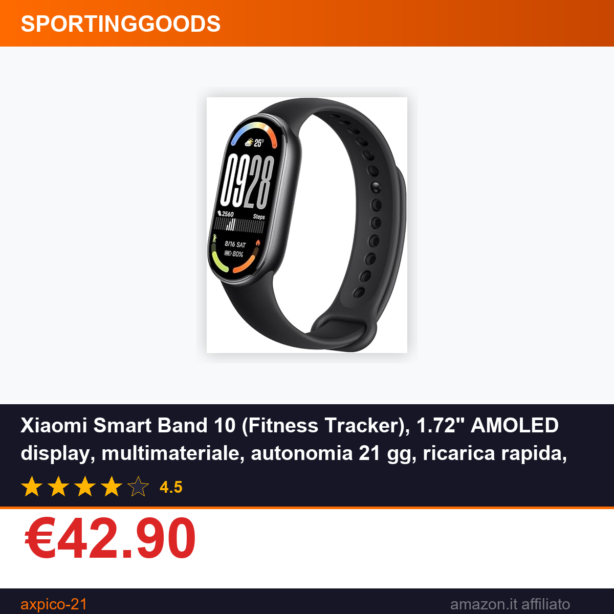

Xiaomi Smart Band 10 (Fitness Tracker), 1.72' AMOLED display, multimateriale, autonomia 21 gg, ricarica rapida, 150+ sport, monitoraggio benessere e sonno, HyperOS 2.0, resistente 5ATM, Compass
⚠️ Il prezzo potrebbe variare. Verifica il prezzo aggiornato su Amazon prima di acquistare. In qualità di Affiliato Amazon ricevo un guadagno dagli acquisti idonei.
Se stai cercando un fitness tracker affidabile, ricco di funzioni e dal rapporto qualità-prezzo imbattibile, la nuova Xiaomi Smart Band10 è l'opzione ideale per le tue esigenze, che tu sia un runner abituale o semplicemente voglia tenere sotto controllo i tuoi parametri di salute quotidiani. Progettata per chi pratica sport a livello amatoriale e per chi desidera monitorare il proprio benessere quotidiano, unisce design moderno e tecnologia all'avanguardia in un formato compatto e leggero, adatto a ogni occasione.
Caratteristiche principali
- Display AMOLED da 1.72" luminoso e ad alto contrasto, incastonato in una cassa multimateriale comoda da indossare anche per ore
- Autonomia fino a 21 giorni e ricarica rapida, per ridurre al minimo i tempi di inattività del dispositivo
- Oltre 150 modalità sportive, monitoraggio completo del sonno e dei parametri vitali, con bussola integrata e resistenza 5ATM (adatta anche al nuoto)
- Sistema operativo HyperOS 2.0 per una navigazione fluida e una sincronizzazione semplice con gli smartphone compatibili
Prezzo e offerta
Al momento la Xiaomi Smart Band 10 è disponibile su Amazon a soli 42,90€, un prezzo estremamente competitivo per un dispositivo di questa fascia, che offre funzioni solitamente riservate a modelli ben più costosi. A confermare l'ottimo rapporto qualità-prezzo ci pensa la valutazione media di 4.5 stelle su 5 rilasciata dagli acquirenti verificati, che ne apprezzano in particolare la durata della batteria, la leggibilità del display e la precisione dei sensori di monitoraggio. È un'offerta ideale per chi vuole aggiornare il proprio tracker attuale o regalare un accessorio utile e tecnologico senza superare il budget.
Non perdere questa opportunità: Acquista su Amazon oggi stesso per ricevere la tua Xiaomi Smart Band 10 in pochi giorni.